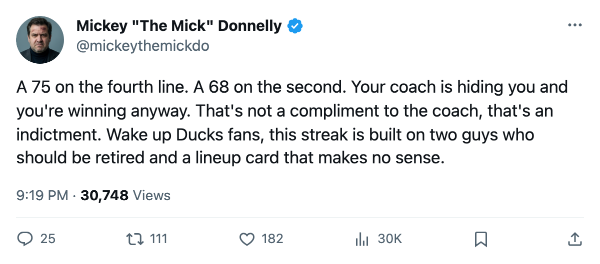
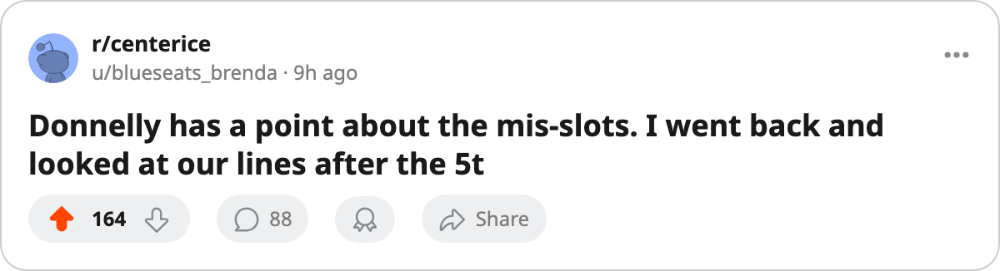

SEVEN STRAIGHT. FEDOROV IS 36. THE COACH HAS A 75 ON THE FOURTH LINE.
Anaheim owns the longest win streak in this league and the worst lineup card in the Pacific. Tonight is the free pass.
 Mickey "The Mick" DonnellyColumnist, ex-goalie · The Penalty Box
Mickey "The Mick" DonnellyColumnist, ex-goalie · The Penalty Box
Sergei Fedorov, 36, 46 points, carrying a seven-game streak on a broken lineup

 Mighty Ducks of Anaheim has won 7 in a row. Nobody in this league is hotter. Nobody in this league is worse coached.
Mighty Ducks of Anaheim has won 7 in a row. Nobody in this league is hotter. Nobody in this league is worse coached.
The Ducks sit at 11-13-1, 39 points in 33 games. Third in the Pacific behind  Dallas Stars at 49 and the two clubs ahead of them. Their payroll is $54.64M and their cost per point is $1.40M, second in the division only to Dallas at $1.18M. Best-run hockey business in the Pacific. Still not winning enough for it.
Dallas Stars at 49 and the two clubs ahead of them. Their payroll is $54.64M and their cost per point is $1.40M, second in the division only to Dallas at $1.18M. Best-run hockey business in the Pacific. Still not winning enough for it.
The streak belongs to two old men.  Sergei Fedorov90 [276] is 36 and has 46 points at a 90 overall.
Sergei Fedorov90 [276] is 36 and has 46 points at a 90 overall.  Vyacheslav Kozlov78 [512] is 33 and has 41 points at a 78. Sixty-nine years between them, and they've carried this club through the best stretch in the conference. Their last 10: 28 goals for, 22 against. The room is fine, 94.1 on the Bureau's Morale Scale. The problem is the lineup card.
Vyacheslav Kozlov78 [512] is 33 and has 41 points at a 78. Sixty-nine years between them, and they've carried this club through the best stretch in the conference. Their last 10: 28 goals for, 22 against. The room is fine, 94.1 on the Bureau's Morale Scale. The problem is the lineup card.
Your coach sat a 75 on the fourth line
 Curtis Brown74 [117] plays the fourth-line center at a 75 overall.
Curtis Brown74 [117] plays the fourth-line center at a 75 overall.  Andy McDonald74 [642] is the third-line center at 74. Niko Dimitrakos72 [197] is the third-line right wing at 72. Their second line carries Vincent Denis68 [1001067] at a 68. The coach put a man seven points better than the second-line winger on the fourth line. That's not a role assignment. That's malpractice with a clipboard.
Andy McDonald74 [642] is the third-line center at 74. Niko Dimitrakos72 [197] is the third-line right wing at 72. Their second line carries Vincent Denis68 [1001067] at a 68. The coach put a man seven points better than the second-line winger on the fourth line. That's not a role assignment. That's malpractice with a clipboard.
On the back end,  Todd Reirden71 [826] plays third-pairing left defence at a 71 while
Todd Reirden71 [826] plays third-pairing left defence at a 71 while  Nikos Tselios65 [1013], who is a 65, gets first-pairing minutes on the left side. The coach is giving 11 more points of defence to the fourth pairing than the first.
Nikos Tselios65 [1013], who is a 65, gets first-pairing minutes on the left side. The coach is giving 11 more points of defence to the fourth pairing than the first.
I don't care what the system is. You don't hide your best players on the bottom. You hide your worst. This coach has it inverted and it's working anyway, which tells you how much better this team could be.
Tonight is the gift
 Phoenix Coyotes visits tonight. The Ducks won the only meeting 3-1. Phoenix is 3-12 on the road this season, 28 points all year at $1.98M a point, and 2 wins in 7 division games. They won one last night, their first in a while, and they're still the worst hockey club on the road in this division.
Phoenix Coyotes visits tonight. The Ducks won the only meeting 3-1. Phoenix is 3-12 on the road this season, 28 points all year at $1.98M a point, and 2 wins in 7 division games. They won one last night, their first in a while, and they're still the worst hockey club on the road in this division.
Seven straight, and the next man up is a team that can't win a game outside its own building. If you don't make it eight tonight, you've squandered a streak built on the backs of two men whose best years are a decade behind them. Fedorov turns 37 next spring. He's not going to win 7 more straight in March.
Get your lineup right, coach. You're being carried. Act like it.

